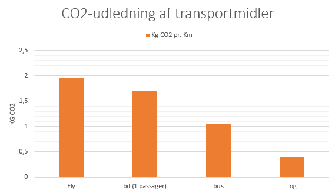

Transport
Transportmidler har også en stor inflydelse på klimaet. For eksempel udgør flytransport alene omtrent 2% af den globale CO2 udledning. Det er derfor vigtigt at tænke over hvilke transport midler man gør brug af. Ved at støtte langsigtede muligheder støtter du et klimavenligt Danmark.

Overstående graf er fremstillet ud fra følgende kilde:www.bbc.com/ClimateChange
Prøv også DR's interaktive hjemmeside og se hvor meget CO2 fly udleder pr. km:
www.dr.dk/klima-rejser
I ”Et spørgsmål om klima” bliver der f.eks. nævnt, at man helst skal undgå McDonalds og i stedet finde noget lokalt kød. Det er begrundet ved at McDonalds oksekød stammer fra italienske kvæg og dermed skal fragtes flere tusinde af kilometer, for at det kan serveres i en dansk McDonalds.
Baseret på dette link